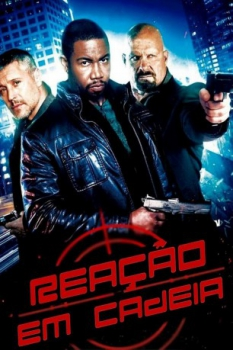

Reação em Cadeia (2015)

When duty calls, plans change

Avaliação (TMDb):


4.8/10 (30 votos)
Avaliação (Usuário):
Outro Título:Chain of Command (Título em inglês)
País:United States, 88 minutos
Idiomas falados:Inglês, Português
Gênero(s):Suspense, Aventura, Ação
Diretor(s):Kevin Carraway
Codec:MPEG-2 (DVD)
Número: 2215
Sinopse:
Um agente especial e chefe de uma força-tarefa de elite retorna para casa depois de sua terceira viagem de serviço, contudo algo está errado. Agora ele é alvo de uma conspiração mortal tão grande que não há ninguém em quem possa confiar, somente em si mesmo.
Elenco:
Steve Austin, Michael Jai White, Max Ryan, Allen Yates
Tipo de mídia: DVD5,
Legendas: Português
Alugado: Não
Tela: 4:3